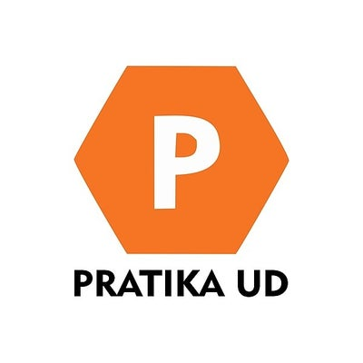

Do registro ao diagnóstico: formulários, filtros e análises para apoiar decisões em uma aplicação local.

PORTFÓLIO PESSOAL
NICHOLAS
BIROCHI.
Dados, código
& curiosidade.
automações e aplicações. Explore meu trabalho
SÃO BERNARDO DO CAMPO, BRENGENHARIA DA COMPUTAÇÃO
ANÁLISE DE DADOS+DESENVOLVIMENTO+AUTOMAÇÃO & IA+HARDWARE
01 / TRABALHOS SELECIONADOS
Do insight ao protótipo.IDEIAS QUE
GANHAM FORMA.
Uma seleção do que venho construindo entre dados, software e experimentação.
Todos no GitHub 6 projetos visíveis
6 projetos visíveis
Painéis de presença, co-presença e evolução semanal com filtros, cache e exportação de relatórios.
ASSISTENTE PESSOAL / 03VOICE DEMOOlá, Nicholas. Sistemas locais ativos.O vídeo diz: Olá, Nicholas. Sistemas locais ativos. Posso organizar tarefas, consultar informações e trabalhar com inteligência artificial sem enviar seus dados para a nuvem.
Assistente multimodal local com voz, memória profissional estruturada e automações supervisionadas.
Um pipeline auto-hospedado para transformar documentos em análises e respostas com IA local.
Loja completa com catálogo, carrinho, pedidos, autenticação, perfis de acesso e painel administrativo.
Uma chave biométrica para macOS: eletrônica, protocolo, firmware e gabinete paramétrico em um só produto.
31repositórios públicos
4áreas de atuação
B2inglês certificado
2027conclusão da graduação
02 / UM POUCO SOBRE MIM
Além do código.
CURIOSO POR
NATUREZA.
INOVADOR
POR ESCOLHA.
Sou Nicholas, estudante de Engenharia da Computação na Faculdade Engenheiro Salvador Arena e estagiário em Análise de Dados na Volkswagen do Brasil.
Meu trabalho conecta dados e desenvolvimento: investigar um problema, encontrar padrões e criar soluções que ajudem alguém a decidir ou a trabalhar melhor.
Essa curiosidade também vai para os projetos pessoais. Exploro IA local, aplicações web, música e hardware, aprendendo enquanto transformo ideias em experiências úteis.
Mais sobre mim no LinkedIn01
Dados & análise
Python, R, SQL, Power BI,
Pandas e Machine Learning
02
Software
Flask, Dash, Java, Spring,
C#, React Native e Git
03
Automação & IA
Ollama, n8n, Docker,
Power Automate e Excel VBA
04
Experimentação
ESP32, USB HID, sensores,
firmware e modelagem 3D
03 / TRAJETÓRIA
Aprendizado e prática em movimento.DOIS CAMINHOS.
UMA EVOLUÇÃO.
Formação e experiência avançam juntas: o que aprendo ganha aplicação, e cada desafio profissional orienta o próximo estudo.
01Aprendizado
PREVISTO
Conclusão da graduação
Formação em Engenharia da Computação prevista para dezembro de 2027.
IDIOMA
Cambridge English B2
Certificação Cambridge B2 First concluída com score 153.
02Profissional
OBJETIVO
Próximo passo: Analista de Dados Júnior
A progressão desejada após o estágio, reunindo experiência prática, formação e autonomia técnica.
VOLKSWAGEN DO BRASIL ATUAL
Estagiário em Análise de Dados
Dashboards em Python e Power BI, análises de dados do SAP e IA local para apoiar a Auditoria Especial.
PRATIKAUD

Estagiário em Análise de Dados
Automação de planilhas, análise de dados e melhoria de relatórios internos com Excel e VBA.
INDICAÇÕES PROFISSIONAIS
Perspectivas de quem confia no meu trabalho.
Recomendo o Nicholas pela curiosidade, dedicação e capacidade de transformar problemas em soluções práticas. Ele aprende rápido, se comunica bem e leva cada projeto a sério.
Henrico Birochi
Indicação via LinkedIn

Amigo meu de longa data, sempre disposto a correr atrás e entregar o produto.
Edgar C. S. Ribeiro
Indicação via LinkedIn

Acompanhei o Nicholas no desenvolvimento do projeto para igreja (CCB-BI). Ele soube ouvir, evoluir a solução e transformar uma necessidade real em uma ferramenta clara, útil e bem construída.
Vitor Tadeu Lousada
Indicação via LinkedIn

Recomendo o Nicholas pela dedicação e disposição para ouvir as necessidades da área, com as quais contribui a partir de ideias e soluções disruptivas, que demonstram seu pensamento orientado pelas tecnologias do futuro.
Eduardo Folli
Indicação via LinkedIn
CONEXÕES PROFISSIONAIS
Novas indicações em breve.
04 / CONTATO
UMA CONVERSA PODE SER O COMEÇO.VAMOS
CONVERSAR?
Estou aberto a oportunidades, colaborações e projetos em dados, automação, IA local e desenvolvimento de software.